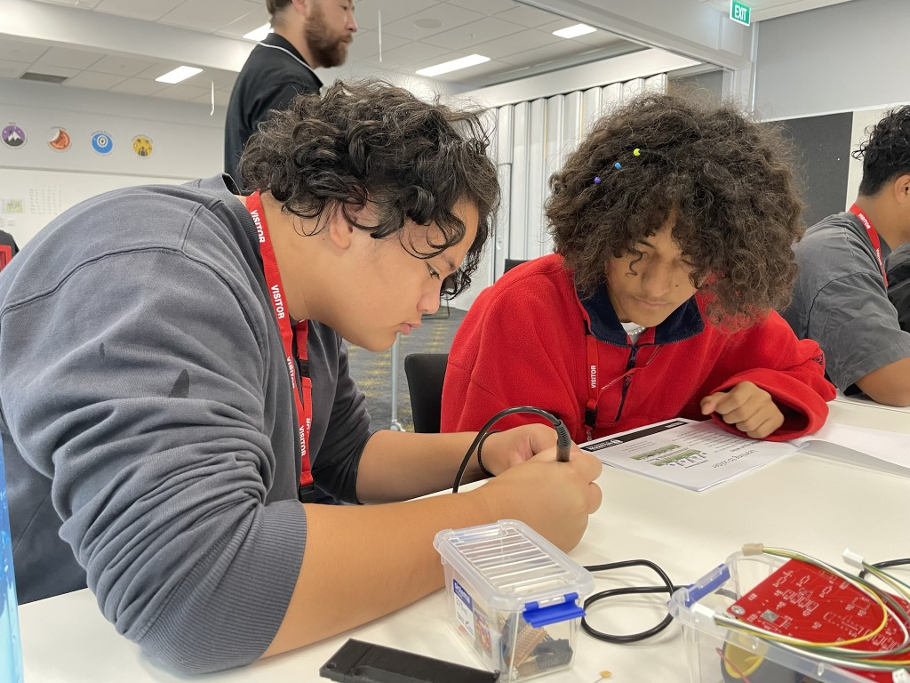
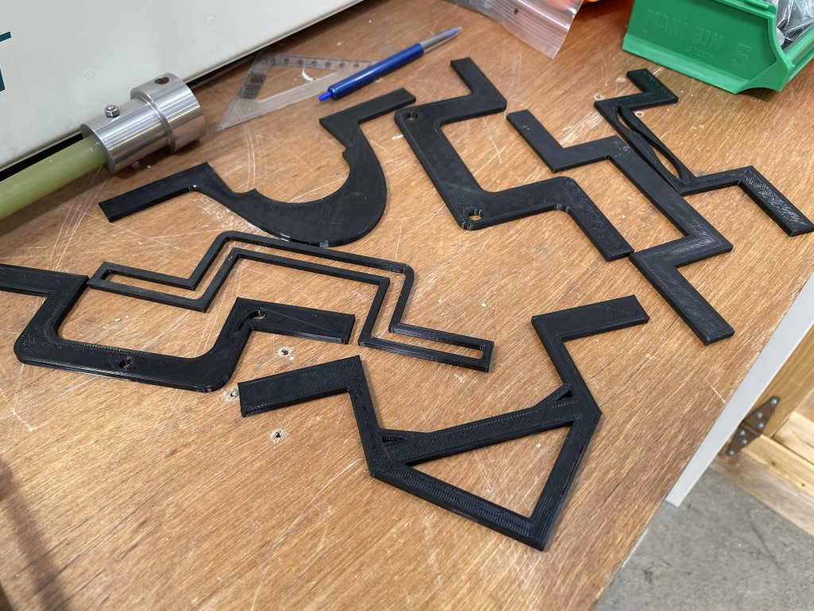
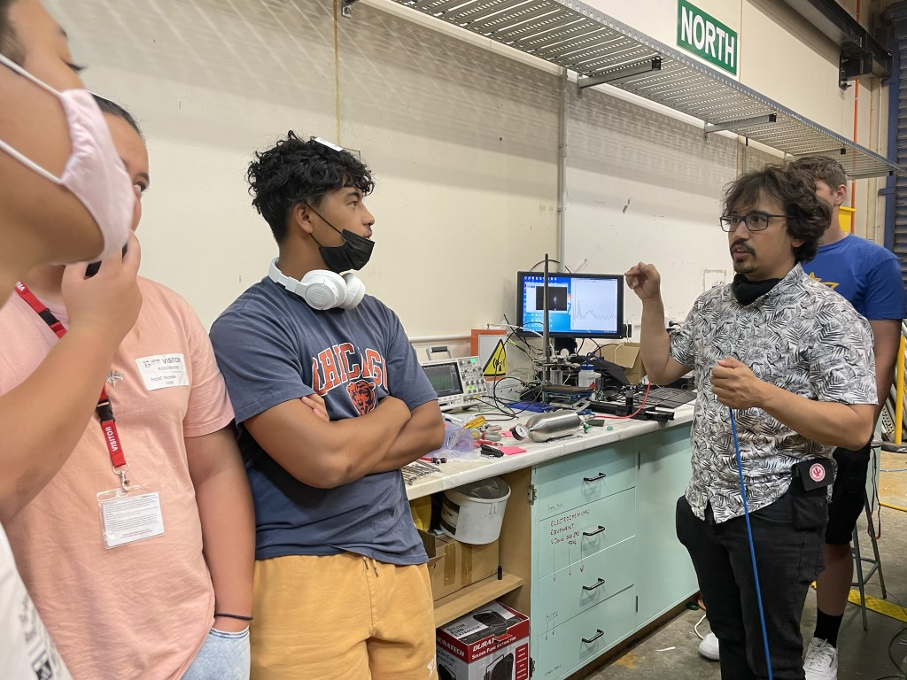
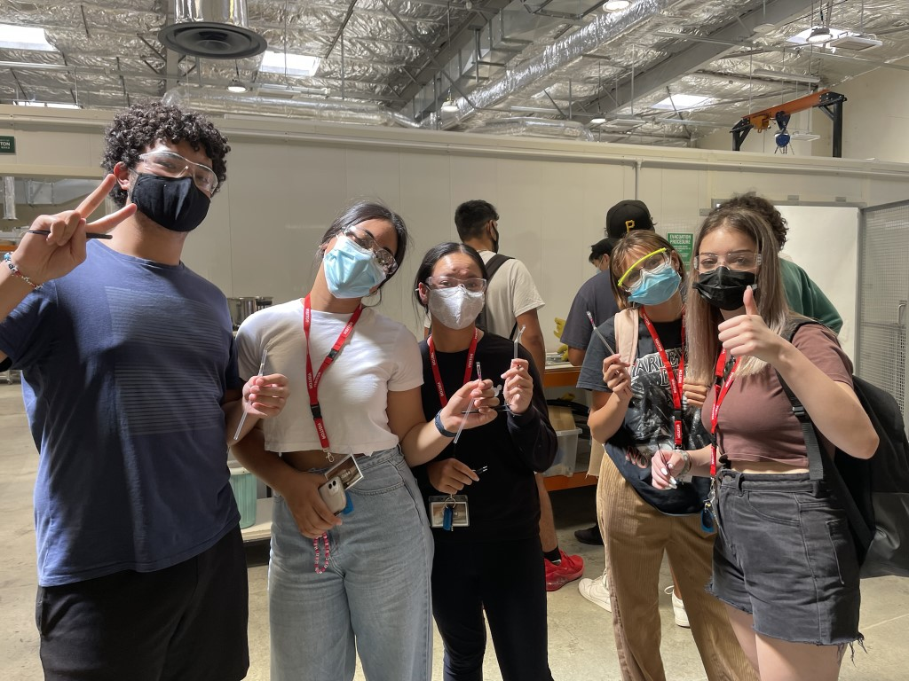

Congratulations to Professor Rod Badcock, of Robinson Research Institute, who has been awarded the Pickering Medal for developing superconducting technologies that are enabling electrical machines at the leading edge of current engineering practice.
Dr Zhenan Jiang, Principal Scientist at Robinson Research Institute, has been awarded $932,000 from the Marsden Fund for his research into high temperature superconducting fusion technology.
Institute Deputy Director Professor Rod Badcock's presents his inaugural lecture "Engineering superconductivity into power intensive applications". Read more here
Congratulations to Institute staff members Dr Zhenan Jiang and Dr Nick Strickland who have been awarded $932000 for their successful research proposal "Underpinning high temperature superconducting nuclear fusion reactor technology" in this year's Marsden round.
Robinson Research Institute was proud to support Pūhoro STEMM Academy working with young Māori students to increase engagement in science, technology, engineering, maths and Māori knowledge subjects.
For Betina Pavri, who recently took up the role of senior principal engineer at Paihau — Robinson Research Institute, having an intense interest in what happens here on Earth has led to a lifetime of study and work looking beyond this planet.
Paihau—Robinson Research Institute has selected Houston-based hosted-payload provider Nanoracks, powered by Voyager Space, to launch a one-of-kind superconducting magnet technology demonstrator to the International Space Station (ISS).
After learning about superconductivity during her Master’s study at Beijing Jiaotong University, Yueming Sun wasn’t prepared to stop exploring, and decided to continue with PhD study at Victoria University's Robinson Research Institute.
9 September, Ministry of Business Innovation & Employment
Congratulations to Institute staff members Dr Simon Granville and Dr Kai Chen who have been awarded $999911 for their successful research proposal "Efficient spintronic terahertz emitter for beyond-the-lab applications of terahertz spectroscopy" in this year's Smart Idea round.
From designing instruments to measure clouds and dust on Earth, to leading the development of instruments to operate on Mars, Randy Pollock has a wealth of experience in what works—and what doesn’t—when operating in space.
Watching 500 kg robots slipping and sliding on a muddy hillside at a recent demonstration was all part of a day’s work for principal engineer Dr Fiona Stevens McFadden and PhD students Payam Nori Zadeh and Dhanika Ratnayake from Paihau—Robinson Research Institute.
Megan Girdwood, a researcher at Robinson Research Institute, has developed a closed-loop process for extracting vanadium that eliminates waste pollutants and meets the New Zealand’s strict regulations for industrial wastewater. The ultimate goal is to revolutionise the industry and produce the world’s most sustainable source of vanadium.
See Robinson Research Institute Professors Rod Badcock and Nick Long talk about our research on electrifying large-scale transport and developing the future of space travel.
Master’s student Cameron Shellard has developed a test system that can simulate electric aircraft flights around New Zealand, relay the performance of the battery, and predict the amount of charge required to perform a flight.
Recently Year 12 and 13 rangitahi from Tauhara North participated in Paihau—Robinson Research Institute’s Tech Bootcamp. It was a fun-filled week where they built self-driving robots, made aspirin, used liquid nitrogen to make ice cream, and much more.
This event was run in conjunction with Tauhara North No. 2 Trust. The Tech Bootcamps are designed to give rangitahi a chance to speak to scientists and engineers about where a career in STEM could lead to, and to get a taste of university life.
Read more about Paihau: https://www.wgtn.ac.nz/robinson
Nine year-12 and year-13 students, from Tauhara, north of Taupō, recently attended a tech bootcamp at Victoria University of Wellington. Teaomaori.news spoke to coordinator Tahlia Crabtree, from the Robinson Research Institute of Victoria University about the programe.
In a new relationship with the German Aerospace Centre (DLR), researchers from the Robinson Research Institute are using their expertise in magnetic fields and high-temperature superconductors to develop technology for use in space.
4 April, Ministry of Buisness, Innovation & Employment
Robinson Research Institute Director Professor Nick Long has been appointed to the Science Board of the Ministry of Buisness, Innovation & Employment. The Science Board is responsible for making independent investment decisions for the Endeavour Fund and the National Science Challenges.
Fusion energy is attracting private investment on the billion-dollar scale for the first time in history. PhD Candidate James Rice explains how a brighter future could be just around the corner.
Realistic Simulations of All-Electric Flights
14 March, Robinson Research Institute
Master's student Cameron Shellard has developed a hardware-in-the-loop setup for simulating all-electric aircraft flying New Zealand domestic routes. The scaled-down motors and battery pack provide a close representation of how a full-sized system will perform under various flight profiles. Determining the optimal ways of employing electric aircraft will be extremely beneficial to our external partners going forward as they consider adopting this emerging technology.
HERA has been tracking research being done by Dr Chris Bumby and team at the Robinson Research Institute for some time now. HERA member, New Zealand Steel, has announced funding to accelerate the development of a pilot-scale reactor for this process located at New Zealand Steel’s Glenbrook site.
Researchers at Victoria University of Wellington's Robinson Research Institute collaborate with Wellington UniVentures and New Zealand Steel to decarbonise steel production.
Spacecraft heat shielding technology and ‘green’ in-space propulsion systems at Robinson Research Institute are among eight collaborative research projects announced by MBIE and the German Aerospace Centre (DLR).
2022 Tech Bootcamp
16-21 January, Robinson Research Institute
1 / 9
The 2022 Tech Bootcamp cohort with their solar-powered cars.
2 / 9
Measuring the output from a solar cell.
3 / 9

Soldering a printed circuit board for a self-driving robot.
4 / 9
Learning how to code a Micro:bit micro-controller.
5 / 9
Fun with soldering!
6 / 9
Testing and calibrating a line-following robot.
7 / 9

3D-printed beams designed by the students in SolidWorks, and then stress-tested to identify which had the highest strength-to-weight ratio.
8 / 9

Chatting about plasma at GNS Science.
9 / 9

Making ice cream, and freezing various items with liquid nitrogen.
In January, Robinson Research Institute hosted its third Tech Bootcamp for Year 12-13 Māori and Pasifika students, in conjuction with our partners at Ferrier Institute, Victoria University Faculties of Engineering and Science, Callaghan Innovation and GNS Science. The Bootcamps aim to inspire young people to pursue a career in science and engineering. For more information contact rri‑postgrad@vuw.ac.nz
High-speed bearing demonstrated
21 January, Robinson Research Institute
PhD candidate Mohammad Siamaki has demonstrated an experimental superconducting bearing operating at over 89000 rpm. This is believed to be a New Zealand record. Superconducting bearings use magnetic forces to levitate a spinning shaft in free space, thereby eliminating mechanical friction.